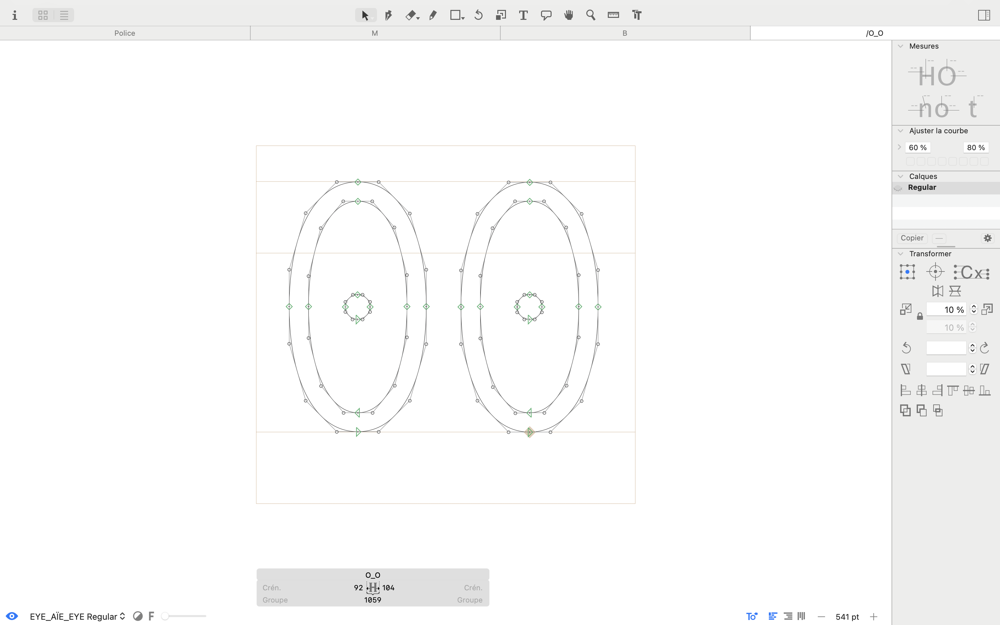
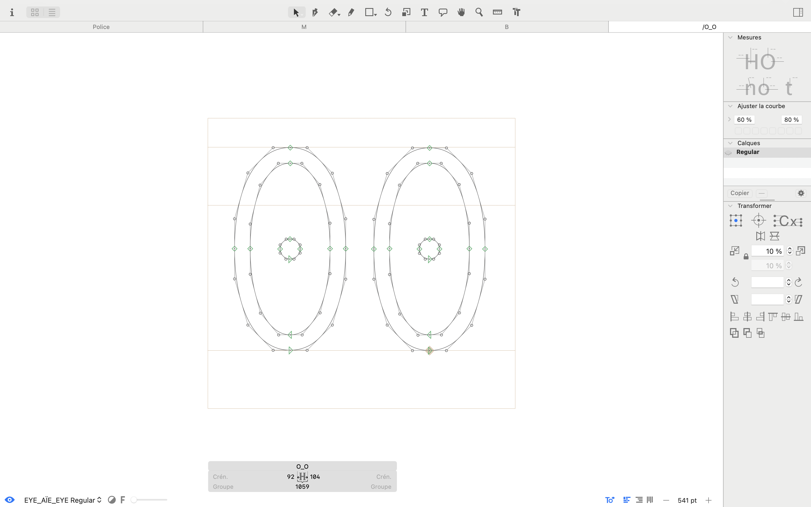

N°17
Titre
Eye Aïe Eye
Date
Mars 2023
Catégorie
Typographie ; Édition
¶
Inspirée par le logotype de «Mazzeti», chocolatier suisse datant de 1911, j’ai proposé la reconstitution d’une typographie complète, constituée de deux graisses distinctes.
Ce projet m’a permis de découvrir l’ampleur du travail (ou la marge d’interprétation) lors de la numérisation d’une typographie, tout en me servant d’exercice de formation au logiciel Glyphs.
→ Malgré l’ancienneté du logotype, le manque d’empattement, de pleins et de déliés confère à ma police de caractère un aspect résolument moderne. Ce spécimen vise donc à révéler que cette typographie a transcendé les époques et conservé une pertinence contemporaine.
→ L’œil naturellement haut du logotype m’a inspirée, et j’ai choisi de mettre en valeur cette caractéristique à travers le format allongé du spécimen. J’ai ensuite effectué une recherche de références autour de la vision, avec ,par exemple le renvoie à l’expression: «the eye of the needle» dans la couverture, ou bien la présentation de l’entièreté de la police de caractère sous forme d’échelle d’acuité visuelle.
Outils et technique
Glyphs / Indesign
Suivant